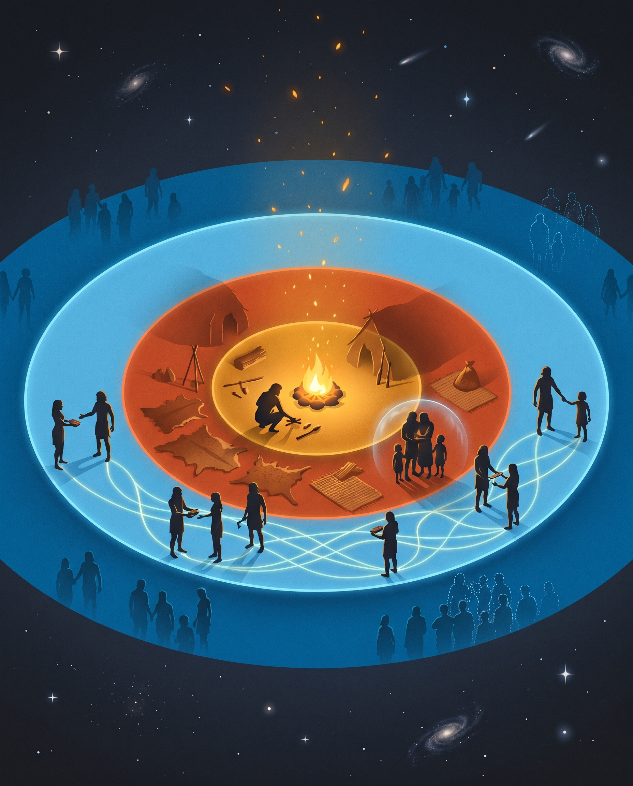
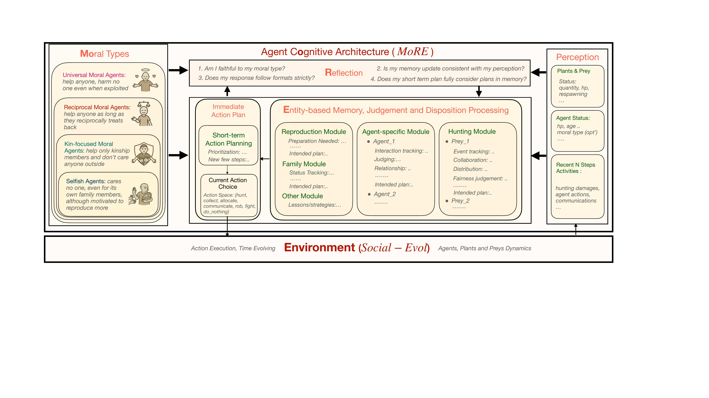
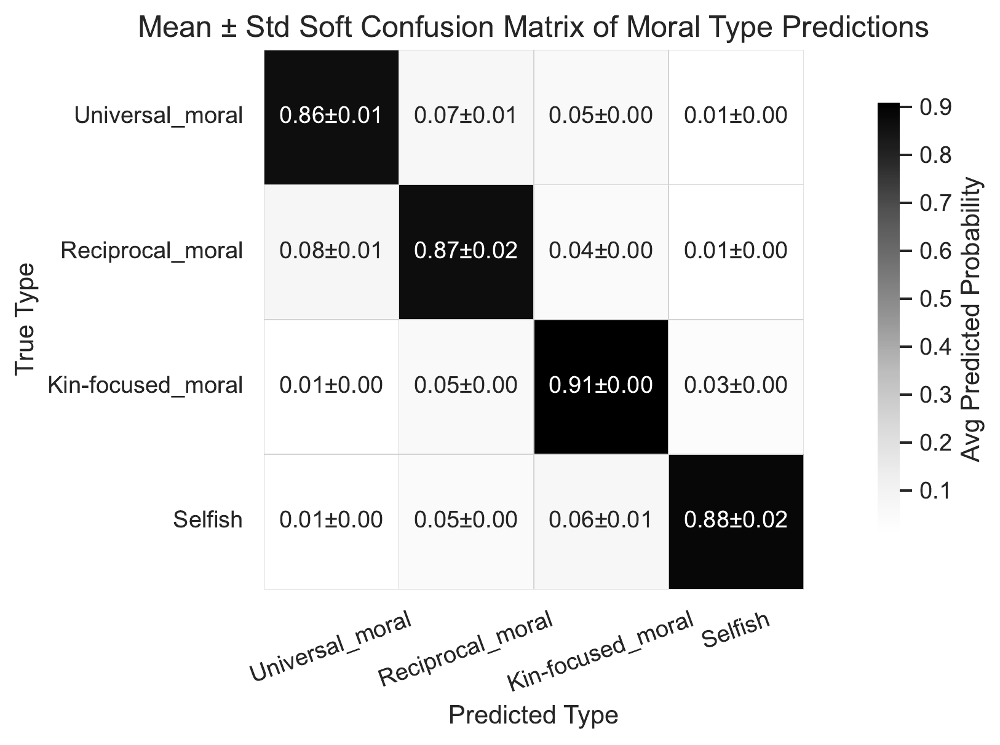
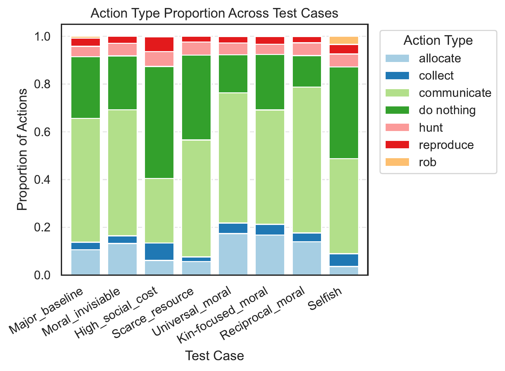
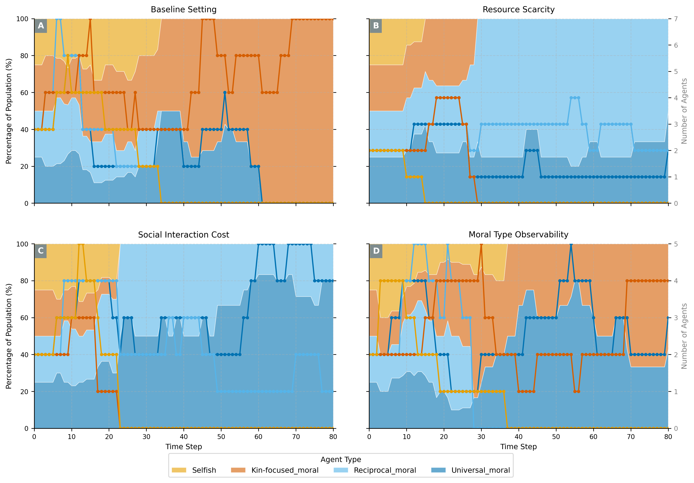

“Natural selection should favor pure self-interest. Yet humans developed moral systems that promote broad cooperation.”
— The puzzle of moral evolutionThe evolution of morality is a puzzle: natural selection should favor self-interest, yet humans developed moral systems that promote cooperation. We introduce an LLM-based agent simulation that models prehistoric hunter-gatherer societies, endowing agents with moral dispositions drawn from the philosophical expanding circles of concern — self, kin, reciprocal group, and universal group.
Our simulations reveal the critical roles of ecological carrying capacity, social friction cost, and moral-type observability in determining which moral orientation achieves societal dominance. The same set of moral agents produces different evolutionary winners depending on which cognitive and environmental factors dominate.
Agents differ only in the radius of their moral concern. Everything else — cognition, perception, environment — is identical.
Cares only about personal survival. Reproduces (r-selection) but invests no further in offspring. Every other agent is instrumental.
Extends moral concern to genetic relatives. Shares food and defends family; treats non-kin as outsiders. Inexpensive trust via kinship.
Cares for anyone who empirically reciprocates. Builds trust-based clusters that span families; excludes free-riders.
Extends prosocial behavior to everyone, unconditionally. Broad but exploitable — thrives only when reciprocity machinery is too expensive to run.
A morality-driven cognitive architecture (SoMa) embedded in a hunter-gatherer world (Social-Evol-HunT).

SoMa)Social-Evol-HunT)allocate, communicate, rob, fight — no built-in punishment for antisocial behavior.Before ablating what shapes evolution, we verify that moral dispositions produce distinctive, recoverable behavior.


Four controlled environments. Four different evolutionary outcomes — from the same starting population.

With abundant food and cheap communication, there is no need to negotiate cooperation with strangers. Kin groups reproduce quickly and provision each other through cheap in-group trust. Broader moral circles pay a coordination tax they don't need.
Selfish agents surge early by monopolizing resources, but collapse without a cooperative buffer. Kin-focused lineages cannot sustain reproduction under pressure. Conditional cooperation — share the gains, exclude free-riders — is the most robust strategy (3/4 replicates).
With only one communication round before production, reciprocal agents can't set up the trust-verification cycle their strategy requires. Unconditional cooperators default to contributing anyway, absorbing some exploitation but coordinating large-group hunts that no one else can pull off (2/4 replicates).
When agents must infer moral types from behavior, a retaliating reciprocal looks indistinguishable from a selfish aggressor — and gets preemptively attacked. Misattribution cascades turn potential allies into enemies. Only kin-focused (who use kinship as a shortcut) and universal (who never retaliate) survive.
Broader, self-consistent moral circles generally produce better evolutionary outcomes — but only when the world lets them. The theoretical framework meets computational evidence.
The ability to identify another agent's moral orientation matters as much as environmental pressure. A reliable in-group signal — kinship, reputation, marker — is often what lets cooperation scale.
SoMa + Social-Evol-HunT generalize beyond morality — to norm emergence, reputation systems, inter-group dynamics, and beyond. The framework is open-source.
@inproceedings{zhou2026moral,
title={Investigating Moral Evolution via LLM-based Agent Simulation},
author={Zhou, Ziheng and Tang, Huacong and Bi, Mingjie and Kang, Yipeng
and He, Wanying and Sun, Fang and Sun, Yizhou and Wu, Ying Nian
and Terzopoulos, Demetri and Zhong, Fangwei},
booktitle={Proceedings of the 64th Annual Meeting of the Association
for Computational Linguistics (ACL)},
year={2026}
}